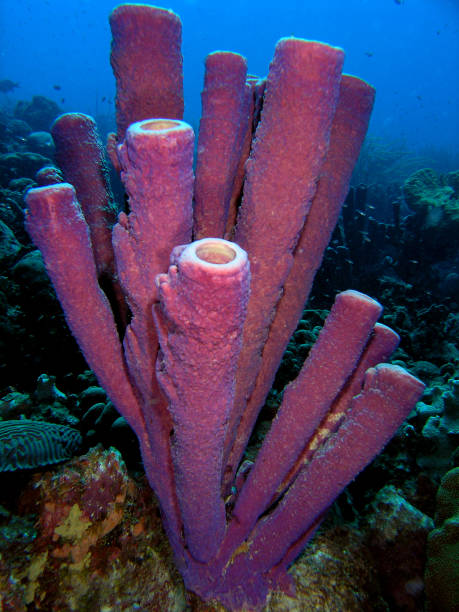
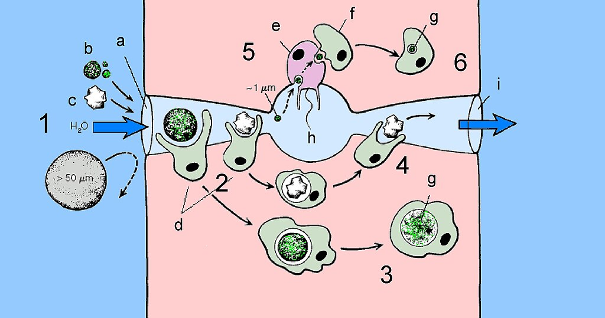
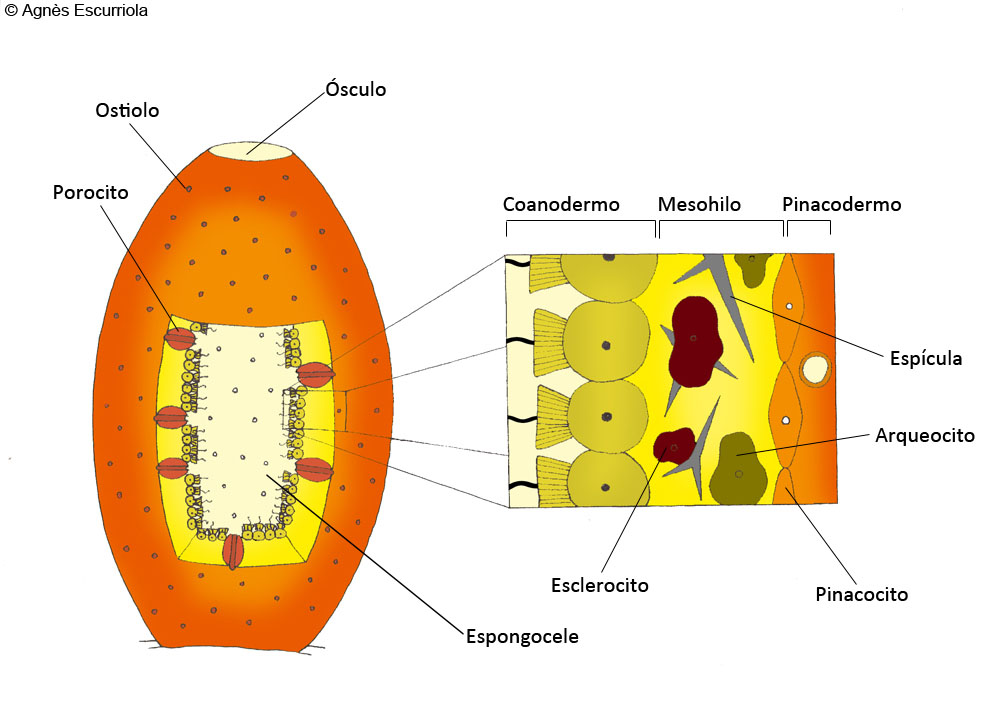
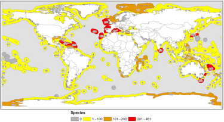

Invertebrados
¿Qué son las Esponjas?
Los poríferos (Porifera), también conocidos como esponjas o esponjas de mar, son un filo de animales acuáticos que se encuentran enclavados dentro del subreino Parazoa. Son filtradores gracias a un desarrollado sistema acuífero de poros, canales y cámaras que generan corrientes de agua provocados por el movimiento de unas células flageladas: los coanocitos. Existen unas nueve mil especies de esponjas en el mundo, de las cuales solo unas ciento cincuenta viven en agua dulce. Se conocen fósiles de esponjas (una hexactinélida) desde el Período Ediacárico (Neoproterozoico o Precámbrico superior). Se consideraron plantas debido a su inmovilidad hasta que en 1765 se descubrió la existencia de corrientes internas de agua y fueron reconocidos como animales. Su digestión es intracelular. Las esponjas son el grupo hermano de todos los demás animales. Las esponjas fueron las primeras formas en ramificarse del árbol evolutivo desde el ancestro común de todos los animales.

Historia
Aristóteles (siglo IV a. C.), quien estuvo en los orígenes de la taxonomía científica de los animales, los dividió en su obra "Las partes de los animales" (en griego antiguo, Περὶ ζώων μορίων), en dos grandes grupos: "animales con sangre" y "animales sin sangre", los cuales a su vez clasificó en unidades más pequeñas.
Más tarde, en los siglos IV-V d. C., los neoplatonistas Dexipo y Armonio de Hermia comenzaron a llamar a tales organismos "zoofitos" (en griego antiguo, ζωόφυτα), clasificándolos como formas intermedias entre plantas y animales. En la Europa medieval, este término casi no se usó, pero nuevamente entró en uso en el Renacimiento, ya que fue utilizado en sus clasificaciones por zoólogos como Edward Wotton, Guillaume Rondelet, Conrad Gesner y Ulisse Aldrovandi.
Las esponjas aparecían invariablemente en los "zoofitos", aunque el volumen del grupo cambiaba; así, en "De differentiis animalium" (1552) de Wotto, las estrellas de mar, los escifozoos y los ctenóforos fueron incluidos a los zoofitos. En el libro de Carlos Linneo "Systema Naturae", la clase Vermes incluía el orden Zoofita con un volumen aún mayor que el de Wotton: Linneo también incluía urnas marinas y algunos moluscos y gusanos en el número de zoofitos. Al mismo tiempo, en la 10.ª edición del libro (1758), Linneo definió Zoophyta como "plantas con flores que viven la vida animal", y en la decimosegunda edición (1766-1768) como "animales complejos que florecen como las flores de las plantas".
La naturaleza animal de las esponjas fue corroborada por primera vez por John Ellis, quien describió su capacidad para crear corrientes de agua y cambiar el diámetro de los Osculum y esbozó sus observaciones en 1765 en una carta a Daniel Solander (en 1766 la carta fue publicada en Philosophical Transactions of the Royal Society). En 1752, antes del descubrimiento de Ellis, el naturalista francés Jean-André Peysonnel planteó la hipótesis de que las esponjas no son organismos vivos, sino estructuras erigidas por gusanos de mar.

Características generales de los poriferos
Una de las características más sorprendentes de las esponjas es que la mayoría de las células que componen su cuerpo son totipotentes, es decir, pueden transformarse en cualquiera de los otros tipos celulares según las necesidades del animal. Por tanto, se considera que las esponjas tienen una organización celular, a diferencia del resto de metazoos cuya organización es tisular (con tejidos). Carecen de verdaderas capas embrionarias.
La forma corporal generalizada de estos animales es la de un "saco" con una abertura grande en la parte superior, el ósculo, que es por donde sale el agua, y muchos poros más o menos pequeños en las paredes, que es por donde entra el agua. La filtración del alimento se produce en la cámara interna del animal, y es llevada a cabo por un tipo celular especializado y único de los poríferos, los coanocitos. Estas células tienen una gran similitud con los protozoos coanoflagelados, por lo que hoy hay pocas dudas de que están relacionados filogenéticamente. Las esponjas, los metazoos más primitivos, tuvieron probablemente un antecesor común con los coanoflagelados coloniales, similares tal vez a los actuales Proterospongia o Sphaeroeca que son simples agregados de animales unicelulares.
Las esponjas son prácticamente incapaces de desplazarse; muchas carecen de simetría corporal y por tanto no tienen una forma definida; las hay que crecen indefinidamente hasta que topan con otra esponja en crecimiento u otro obstáculo, otras que se incrustan en rocas, horadándolas, etc. Una especie determinada puede adoptar diferentes aspectos según las condiciones ambientales, como la naturaleza e inclinación del sustrato, disponibilidad de espacio, corrientes de agua, etc.
Las esponjas carecen de boca y de aparato digestivo y a diferencia del resto de metazoos dependen de la digestión intracelular, con lo que la fagocitosis y pinocitosis son los mecanismos utilizados para la ingestión de alimento. Tampoco tienen células nerviosas, son los únicos animales que carecen de sistema nervioso.

Anatomía
Pinacodermo
Externamente, las esponjas están cubiertas por una capa de células pseudoepiteliales anchas y largas denominadas pinacocitos; no se trata de auténtico epitelio, ya que carece de lámina basal. El conjunto de pinacocitos forman el pinacodermo o ectosoma que es análogo a la epidermis de los eumetazoos. El pinacodermo está atravesado por numerosos poros dermales tapizados cada uno por una célula arrollada llamada porocito; el agua es atraída hacia ellos y penetra en el interior. En algunas especies hay una cutícula, una capa de colágeno consistente que recubre y eventualmente sustituye al pinacodermo.
Coanodermo
La superficie interna de una esponja está tapizada por células flageladas que en su conjunto forman el coanodermo. La cavidad central principal es el espongocele o atrio. Dichas células flageladas, denominadas coanocitos, que son virtualmente idénticas a los protozoos coanoflagelados, producen la corriente de agua y son importantes en la alimentación. El coanodermo puede tener el grosor de una célula (organización asconoide), puede replegarse (organización siconoide) o puede subdividirse para formar racimos de cámaras de coanocitos independientes (organización leuconoide).
Mesohilo
Entre estas dos capas se encuentra un área organizada laxamente, el mesohilo, en la cual se pueden encontrar fibras de soporte, espículas del esqueleto y una variedad de células ameboides de gran importancia en la digestión, secreción del esqueleto, producción de gametos y el transporte de nutrientes y desechos. Los diferentes elementos del mesohilo están inmersos en un mesoglea coloidal.

Reproducción y desarrollo
Reproducción asexual
Dada la potencialidad total de sus células, todas las esponjas pueden reproducirse asexualmente a partir de fragmentos. Muchas esponjas producen yemas, pequeñas protuberancias que acaban desprendiéndose, que en algunos casos contienen alimentos almacenados. Las especies de agua dulce (Spongillidae) producen gémulas complejas, pequeñas esferas bien organizadas con arqueocitos y varias capas protectoras, entre ellas una gruesa de colágeno sostenida por espículas de tipo anfidisco; son muy resistentes ante las inclemencias ambientales, como la desecación y la congelación (soportan -10 °C). Algunas especies marinas producen gémulas más simples, llamadas soritos.
Reproducción sexual
Las esponjas carecen de gónadas, y los gametos y los embriones se hallan en mesohilo. La mayoría son hermafroditas, pero existe una gran variabilidad, llegando al extremo que en una misma especie conviven individuos hermafroditas con individuos dioicos. En cualquier caso, la fecundación es casi siempre cruzada.
Los espermatozoides se forman a partir de coanocitos, cuando todos los de una cámara sufren la espermatogénesis y originan un quiste espermático. Los óvulos a partir de coanocitos o de arqueocitos y se rodean de una capa de células alimentarias o trofocitos. Los espermatozoides y los óvulos son expulsados al exterior a través del sistema acuífero; en este caso la fecundación se produce en el agua y da lugar a larvas planctónicas. En algunas especies, los espermatozoides penetran en el sistema acuífero de otros individuos donde son fagocitados por los coanocitos; luego, estos coanocitos se desprenden, se transforman en células ameboides (forocitos) que llevan el espermatozoide hasta un óvulo; tras la fecundación, las larvas son liberadas a través del sistema acuífero.
Ecología
Distribución
Por su estructura corporal (sistema acuífero de filtración), las esponjas siempre habitan el medio acuático, ya sea dulce o marino, y se fijan a un sustrato sólido, aunque algunas especies puede fijarse en sustratos blandos como arena o lodo. La mayoría de las esponjas son esciófilas (prefieren la penumbra). Su principal fuente de alimento son partículas orgánicas submicroscópicas en suspensión, muy abundantes en el mar, aunque también ingieren bacterias, dinoflagelados y otro plancton de pequeñas dimensiones. Su capacidad filtradora es destacable; una esponja leuconoide de 10 cm de altura y 1 cm de diámetro contiene 2 250 000 cámaras flageladas y filtra 22,5 litros de agua al día.
A pesar de su simplicidad, las esponjas tienen un gran éxito ecológico; son los animales dominantes en muchos hábitats bentónicos marinos y toleran bien la contaminación por hidrocarburos, metales pesados y detergentes, acumulando dichos contaminantes en grandes concentraciones sin daño aparente. Algunas esponjas poseen simbiontes fotosintéticos (cianobacterias, zooxantelas, diatomeas, zooclorelas) o no (bacterias). Periódicamente expulsan los simbiontes y células somáticas, y secretan substancias mucosas con regularidad. En ciertas esponjas los simbiontes llegan a representar el 38% de su volumen corporal.
Son pocos los animales que se alimentan de esponjas, debido a su esqueleto de espículas y a su toxicidad. Algunos moluscos opistobranquios, equinodermos y peces. Con frecuencia se trata de especies muy específicas que son exclusivamente espongiófagas y depredan sobre una especie concreta de esponja. Las esponjas poseen una variedad sorprendente de toxinas y antibióticos que usan para evitar la depredación y en la competencia por el sustrato. Algunas de estos compuestos se han revelado de utilidad farmacológica, con propiedades antiinflamatorias, cardiovasculares, gastrointestinales, antivíricas, antitumorales, etc., y están siendo investigadas intensamente. Entre estos compuestos se incluyen arabinósidos, terpenoides, halicondrinas, etc.
Muchos invertebrados y diversos peces utilizan las esponjas, por su estructura porosa, como lugar de residencia o refugio. Algunos gasterópodos y bivalvos tienen esponjas incrustantes sobre sus conchas y muchos cangrejos recolectan esponjas que colocan sobre sus caparazones. Se trata de casos de mutualismo, en que dichos animales consiguen camuflaje y las esponjas un método de desplazamiento.
Las esponjas son comunes en todo el mundo. La mayoría de las especies habitan en aguas oceánicas desde regiones polares hasta regiones tropicales. Aun así, las esponjas alcanzan la mayor diversidad de especies en las zonas tropicales y subtropicales del Océano Mundial especies (según otras fuentes, cerca de ) viven en cuerpos de agua dulce.
La mayoría de las especies viven en aguas tranquilas y limpias, ya que las partículas de limo y arena suspendidas en el agua o levantadas del fondo por las corrientes pueden obstruir los poros en los cuerpos de las esponjas, obstaculizando así los procesos de respiración y nutrición. Dado que las esponjas llevan un estilo de vida sedentario adjunto, necesitan un sustrato sólido para su desarrollo y crecimiento. En este sentido, las acumulaciones de esponjas ocurren en lugares donde hay materiales pedregosos en el fondo: piedras, cantos rodados, guijarros, etc, sin embargo, algunas especies pueden fijarse en sedimentos sedimentarios blandos del fondo con la ayuda de una base en forma de raíz de su cuerpo.
La mayoría de las esponjas viven a profundidades poco profundas, hasta 100-500 m. Con el aumento de la profundidad, el número de especies de esponjas disminuye. A profundidades superiores a 1000-1500 m, las esponjas suelen ser bastante raras, de modo que el número de especies de esponjas en aguas profundas sea pequeño.
En aguas templadas, las esponjas son más numerosas, pero menos diversas que en los trópicos. Esto se debe probablemente al hecho de que en los trópicos hay muchos organismos que se alimentan de esponjas. Las esponjas vítreas son más numerosas en aguas polares, así como a grandes profundidades de mares templados y tropicales, ya que su estructura corporal porosa les permite extraer partículas de alimentos de estas aguas pobres en alimentos a un costo mínimo. Las esponjas comunes y las esponjas calcáreas son numerosas y variadas en aguas no polares más tranquilas. Las esponjas que viven en zonas de marea están bien adaptadas a una corta estancia al aire libre, cuando la marea baja sobresalen del agua. Sus bocas y poros están cerrados, lo que evita la pérdida excesiva de humedad y el secado.
